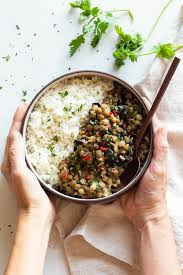

Rice and lentils
with tofu and fried onion

Description
This dish is also super quick, full of protein and won't take much energy to prepare. If you look for easy vegan meal with protein, this is your choice!
This recipe is so basic, you can add anything you want starting from spices up to any vegetables. Just add these or fry them with the tofu. It's up to you
Ingridients
Basmati rice (200 g)
Red lentils (200 g)
1 or 2 onions
Two tofu bricks (200g)
- Oil
- Spices of your linking (salt, pepper, paprika, oregano, cumin)
Steps
- Start with cooking the rice in rice cooker, don't forget to add salt to the water
- Cook the red rice according to package instructions, add vegetable stock cube to the cooking water
- Chop the onion and cut the tofu
- Put the onion into frying pan with oil and once golden, add tofu
- Add spices to the tofu and stir for a while, turn off the stove top
- Mix cook rice and red lentils together and add the toppings